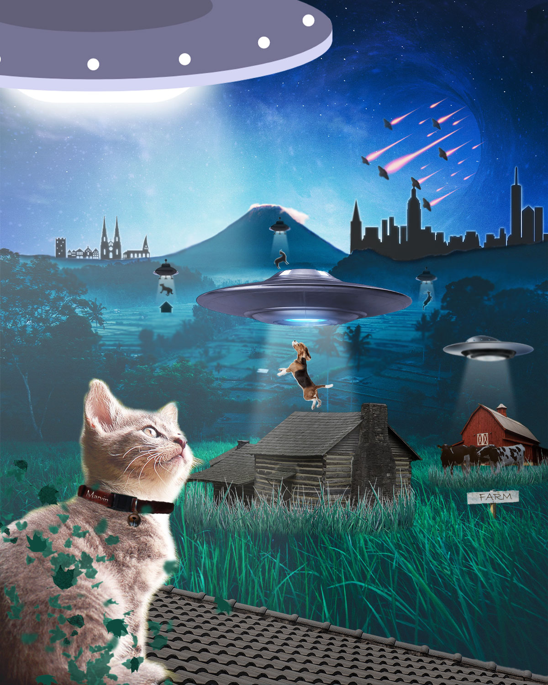

Portfolio
These are the projects from my first semester digital media class. I learned about image editing, video editing, animation, and web design.
Photoshop Project

Aliens are abducting animals? 
Why? For what purpose? I'm afraid we may never find out...
My Photoshop Project taught me about layer masks, adjustment layers, and blending modes.I wanted to use an alien invasion as my theme, but also wanted to have cat somewhere, thus I mixed both ideas together.
Stop Motion Project
Maybe not all foxes are mischievous... 
Maybe not all heroes wear capes...
This is my stop motion animation where I learned to animate and use a 30 fps frame rate. I wanted to tell a short story using stop motion. I took the photos that I needed, then went to work on editing them.
I also wanted to use a green screen for this project, but that ended up taking most of my time in this project,
as I manually removed the background in every image.
Video Editing
How far will you go to win?
This is my video project where I learned how to shoot, cut and edit video footage.My idea was for this video,
was to trick people into thinking that it's one thing,
but it turns out to be something completely different.